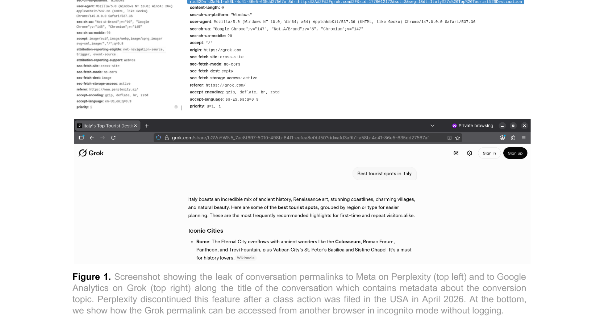
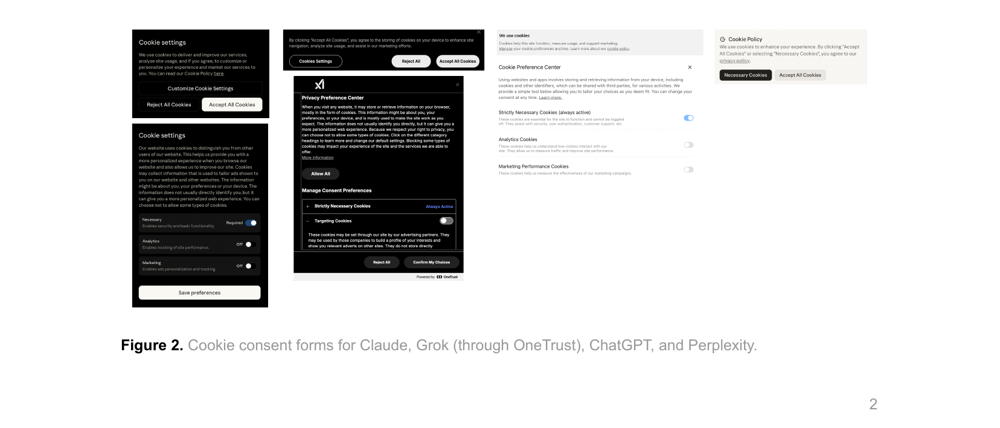

We disclose structural privacy risks in prominent generative AI products — Perplexity, Anthropic's Claude, xAI's Grok, and OpenAI's ChatGPT — caused by third-party trackers embedded in LLM services that leak user conversations, identities, and sensitive metadata.
Generative AI is rapidly becoming a foundational layer of the Internet, enabling the emergence of agentic systems that mediate users' interaction with digital services. Despite this transformation, underlying data-driven economic dynamics remain largely unchanged, as acknowledged by prominent industry actors. This continuity extends to the integration of third-party trackers within generative AI ecosystems to monitor users' actions, which retain the capability to collect sensitive user data.
In this report, we disclose concerning structural privacy risks caused by (1) the systematic introduction of third-party analytics services in prominent generative AI products developed by major AI actors such as Perplexity, Anthropic's Claude, xAI's Grok, and OpenAI's ChatGPT; and (2) insecure access control mechanisms in some of these LLMs that leak user conversations to third-party trackers embedded in LLM services, as well as the conversation title which can be a very sensitive data type that can disclose users' concerns, conversation topics, interests, and more. Meta's AI, MS Copilot, and Google Gemini are out of scope of this analysis because they act both as LLM providers and third-party trackers, falling into a different threat model. We plan to extend the scope of our analysis to include these products in the coming weeks.
User conversations in LLM services frequently contain sensitive information introduced by end users. Yet, conversation URLs are disclosed to third-party trackers such as the Meta Pixel, as shown in Figure 1 by default, for Grok and Perplexity. These URLs often serve as publicly available permalinks with weak access control, making them accessible by default to anyone knowing the URL. This potentially allows the trackers to access user conversations and their content. Table 1 describes the default access control mechanisms across LLMs.
Conversation URLs are frequently shared by LLM providers alongside tracking identifiers to third-party
trackers (e.g., cookies such as fbp, in the case of Meta Pixel), which
enable trackers to map online activity to user identities and behavioral profiles per
official privacy policies. In some cases, the trackers also perform
cookie syncing/server-side tracking
and collect user email hashes through the logging forms, allowing for persistent user tracking, targeting,
and
reidentification. Table 2 lists the PII and conversation leaks observed.
The studied LLMs offer privacy controls to limit conversations' visibility, but in some cases, they may mislead users by implying stronger protections than those which are actually enforced, potentially undermining the expected privacy guarantees. Furthermore, the privacy policies of Grok, Perplexity, OpenAI, and Claude consistently confirm the collection of user conversations, usage telemetry, and metadata for first-party purposes, the use of third-party cookies (e.g., Meta, Google, TikTok) for analytics and advertising, and even data sharing with third parties. Yet, they do not clearly state that user conversations are shared with online advertising and tracking services, relying instead on broad and ambiguous language (e.g., "content you submit" or "business partners") that leaves uncertainty about actual data flows. Cookie consent forms present transparency shortcomings about the cookies collected and their purposes as Fig 2 shows.
Although preliminary, our findings reveal systemic weak privacy and security postures across LLM services. While we do not yet have evidence that conversations are read by trackers, permalink dissemination and by extension the capability to read them exist, and therefore the potential risk.
Generative AI systems are rapidly reaching mass adoption. According to Eurostat, 32.7% of the EU population (ages 16–74) used generative AI in 2025, primarily for personal purposes (25.1%), but also for work (15.1%), covering all sorts of professionals, and education (9.4%).
User conversations frequently contain sensitive information as users often perceive LLMs as trusted assistants. This perception increases the likelihood of oversharing sensitive information. Prior research shows that PII is disclosed to LLMs in unexpected contexts, including sexual preferences, mental support or health conditions, which carries significant privacy risks. These privacy threats are aggravated by LLMs' ability to infer user attributes. These concerns extend at the enterprise and public sector level, where intellectual property and sensitive information can be disclosed, with direct national security implications. In 2023, Samsung banned ChatGPT internal usage after employees leaked sensitive code and intellectual property to LLMs.
When conversation data is shared with third parties like Meta and Google along with cookies and other user identifiers like email hashes without sufficient user awareness and weak access control mechanisms, a new threat scenario arises. The observed practices also suggest that the data-driven business models of the traditional web (e.g., advertising, analytics) are being replicated in LLM ecosystems with limited oversight.
Table 1. Default permalink access control mechanisms and visibility across tiers.
Click the Perplexity row to expand notes.
| Provider | Guest tier | Free tier | Paid tier | Privacy controls | |
|---|---|---|---|---|---|
| Perplexity | Permalinks are fully accessible without login. | Permalinks are only visible to owners unless explicitly shared. | Supports incognito chats in free and premium tiers. They won't be saved in the account's history. Yet, users can share them. | Users can choose one of three settings: Private, Whitelist (only allowed people), and Everyone. If shared with everyone, the chat link is the same as the permalink. | › |
|
Permalink doesn't disclose private conversations by default. In shared incognito chats, once users
leave incognito mode, they will not be able to unshare the conversation.
|
|||||
| Anthropic Claude.ai | Not supported. | Permalinks are only visible to owners unless explicitly shared. | Implements access control mechanisms for sharing conversations with others. | — | |
| OpenAI ChatGPT | Conversation permalinks are only visible to owners unless explicitly shared. | Conversation permalinks are only visible to owners unless explicitly shared. | Offers access control for sharing conversations with others. | — | |
| xAI Grok | Accessible by default. Guest chats are always public. | Allows for the creation of incognito chats, as in Perplexity's case. | Conversations are accessible by default, yet users can restrict access (opt-out). | If the link has already been shared before changing visibility settings, the conversation remains accessible unless users revoke access explicitly at the chat level. | |
Table 2. Summary of PII and conversation/prompt dissemination to third parties.
| Product | Third party | Data leaked | Fires when | |
|---|---|---|---|---|
| Perplexity | fbp cookie, conversation URL |
Discontinued Apr 2026 | › | |
|
Discontinued as of April 3rd, 2026, possibly in response to
US class action.
|
||||
| Perplexity | Datadog | Email address (raw), conversation URL, metadata (timezone, device ID) | Always | › |
|
The URL encodes the text of the first query of the chat (i.e.,
perplexity.ai/search/QUERY-slug, limited to ~30 chars), disclosing
the intent of the conversation. The slug can be sufficient to access the conversation. User email is
also disclosed during interaction, not only in registration forms.
|
||||
| Perplexity | Singular | Email hash, OS and browser metadata | Always | › |
|
User email hash is also disclosed when users interact with the service, not only in registration
forms.
|
||||
| Anthropic Claude.ai | fbp cookie and browser metadata |
› | ||
|
The
Meta Pixel
loads
fbevents.js client-side inside a sandboxed iframe at
a.claude.ai, setting a
_fbp persistence cookie. In parallel, the same event is forwarded
server-side to Facebook Conversions API. Both transmissions share the same Segment
anonymousId, potentially allowing Meta to join client-side and
server-side events under a single user identity. Blocking the client-side pixel does not prevent
Meta from receiving the event via the server-side channel. When non-essential cookies are rejected,
the _fbp cookie is not set and the server-side container forwarding
events to the Conversions API is not observed.
|
||||
| Anthropic Claude.ai | Intercom | Email addresses and conversation URL | Always (authenticated) | › |
|
A persistent WebSocket to
nexus-websocket-a.intercom.io sends the
current page URL every ~2 min., giving Intercom a timestamped log of every conversation the user
visits — sufficient to identify and access the specific conversation. This flow fires
unconditionally on every authenticated session. Disclosing email, name, subscription tier, and
organisation UUID to a third party in sessions where the support widget is never opened may infringe
the data minimisation principle under Article 5 GDPR.
|
||||
| Anthropic Claude.ai | Datadog | User anonymous ID, viewport data, page URL (with chat GUID), usage statistics and metadata | › | |
|
Only observed when accepting non-essential cookies.
|
||||
| Anthropic Claude.ai | Server-side ×11 |
User email, account UUID, subscription plan, page URL (incl. conversation UUID),
Segment
anonymousId,
Amplitude
session ID, country
|
› | |
|
Claude uses Segment analytics fetching its configuration from
a-cdn.anthropic.com (first-party), which includes the Facebook
Pixel PII config. Anthropic explicitly whitelists email,
userAgent, and country; and
blocklists conversation title, account_uuid,
organization_uuid, billing_type,
surface, and version. Proxying
through a first-party domain means hostname-based ad blockers targeting
api.segment.io will not intercept this traffic. We observe that Claude forwards user events server-to-server from Anthropic's infrastructure to eleven trackers with conversion APIs: Facebook Conversions API, LinkedIn Conversions API, TikTok Conversions API, Reddit Conversions API, Google Enhanced Conversions, Amplitude, Iterable, HubSpot, Pinterest Conversions API, Podscribe, and DCM Floodlight. As this forwarding occurs server-to-server, it evades ad blockers. Each forwarded event carries two shared identifiers that enable ID bridging, so user activities on Claude may be linkable across advertising platforms to a single Amplitude session without the user's knowledge or consent. If these cookies are eventually bridged with email hashes, it can facilitate user re-identification and de-anonymization. Only triggered when users accept non-essential cookies. |
||||
| OpenAI ChatGPT | Google Analytics | Conversation URL, page title (chat topic) | Always (free logged-in) | › |
|
The chat topic title is transmitted via the
dt parameter to Google
Analytics, alongside the full conversation URL in the dl parameter.
This leak only occurs for free logged-in users, regardless of whether they accept or reject cookies.
ChatGPT's Content-Security-Policy header explicitly whitelists numerous third-party ad and analytics domains (Facebook, TikTok, Google, LinkedIn, Bing, Reddit), confirming the tracking infrastructure is in place. However, none were observed firing in our experiments — activation may depend on account type, geography, A/B test cohort, or server-side tracking. |
||||
| xAI Grok | Google Analytics & Doubleclick | Conversation URL, page title, metadata | Always | › |
|
The chat topic title is transmitted via the
dt parameter to Google
Analytics and the tab parameter to Google Ads (DoubleClick),
alongside the full conversation URL. The connection to Google Analytics occurs in all circumstances,
regardless of users' cookie consent on OneTrust's forms.
|
||||
| xAI Grok | TikTok | Hashed email, conversation URL, page title, ttp cookie |
› | |
context.page.url contains the full conversation URL;
auto_collected_properties.content_data.meta contains the chat topic
title. TikTok collects email hash on account login page and maps it to TikTok cookies. Connection
only occurs after accepting non-essential cookies.
|
||||
| xAI Grok |
Conversation URL (incl. conversation UUID), page title, fbp cookie
|
› | ||
|
Every URL change triggers a PageView event. Connection only occurs after accepting non-essential
cookies.
|
||||
| xAI Grok | Server-side GTM |
Conversation URL, page title, _fbp,
_ttp cookies
|
› | |
grok.com embeds a Google Tag Manager container (GTM-TBL6BD7W) configured to route events through a server-side GTM (sGTM) instance. A custom event
sent_3_chat_messages fires after 3 messages in a session,
transmitting the full conversation URL (page_location) and chat
topic title to sGTM. sGTM then forwards this event server-to-server to Meta Conversions API and
TikTok Events API — invisible to the browser and not blockable by ad blockers or privacy controls.
The same payload carries both Meta's fbp and TikTok's
ttp cookies, enabling ID bridging between Facebook and TikTok under
a single user identity. Only occurs after accepting non-essential cookies.
|
||||
Full dataset and HAR files will be released alongside the paper. See methodology for experimental conditions.
Findings from web browser sessions across the four tested LLM platforms.
✝ Perplexity discontinued Meta Pixel as of April 3rd, 2026, possibly in response to the US class action filing.


AI-native browsers that embed LLM functionality directly into the browsing experience.
Native mobile applications for iOS and Android. Traffic intercepted via mitmproxy.
A record of our research and disclosure activities.
First observed tracker activity during traffic analysis of Perplexity AI and Grok web interfaces.
Perplexity discontinued the Meta Pixel integration, likely in response to the US class action Doe v. Perplexity AI, Meta Platforms, Google (Case 3:26-cv-02803, filed 31 March 2026), as reported by Ars Technica. This was not the result of our disclosure — we noted it as an independent corroboration of our findings.
Systematic testing across all platforms and surfaces commenced. Condition matrix applied across auth state, cookie consent, account tier, and privacy mode combinations.
Findings submitted to relevant Data Protection Authorities (DPAs) for regulatory review.
xAI notified of findings relating to Grok. No response received to date.
This page and accompanying paper published.
Research artifacts, code, and datasets will be linked here on publication.
Common questions about the research and its implications.
If you have used Perplexity (before April 3rd, 2026), Grok, Claude, or ChatGPT while logged in, your conversation URLs and potentially identifying data — such as email hashes and advertising cookies — were transmitted to third-party networks including Meta, Google, and TikTok. This applies regardless of whether you used private or incognito mode. Perplexity removed the Meta Pixel following a US class action filed in March 2026.
A permalink is a stable, permanent URL pointing to a specific conversation — for example,
grok.com/share/abc123. Several platforms make these URLs publicly accessible by default,
meaning anyone who knows the link can read the full conversation without logging in. When these URLs are
sent to third-party trackers like Meta or Google, those trackers gain the ability to access and index
the conversation content. This is the core risk: leaking a URL is not just metadata — it can be
equivalent to leaking the conversation itself.
Potentially, yes. For platforms where conversation URLs were shared with trackers and those URLs are publicly accessible without login (Grok in particular), any conversation whose permalink was transmitted to a third party could in principle be accessed by that party. Perplexity's guest-tier conversations were fully public until the Meta Pixel was removed in April 2026. Changing privacy settings after the fact does not necessarily revoke access — on Grok, a shared link remains accessible unless you explicitly revoke it at the individual chat level.
It helps for some trackers but not all. Rejecting non-essential cookies prevents Claude's Meta Pixel, Datadog, and server-side forwarding to eleven ad platforms from firing. On Grok, TikTok, Meta Pixel, and server-side GTM tracking are also gated on cookie consent. However, Grok's Google Analytics fires in all circumstances regardless of cookie consent on OneTrust's forms. Claude's Intercom integration sends conversation URLs unconditionally on every authenticated session, regardless of cookie choices.
Steps vary by platform:
Partially. Browser-based ad blockers can intercept client-side Pixel requests, but cannot block
server-to-server transmission. Claude forwards user events from Anthropic's infrastructure to eleven
ad platforms — including Meta, LinkedIn, TikTok, and Google — entirely server-side, invisible to the
browser. Grok's server-side GTM also relays data to Meta and TikTok server-to-server after 3 messages
in a session. Additionally, Claude proxies Segment analytics through a first-party domain
(a-cdn.anthropic.com), bypassing hostname-based blockers entirely.
We followed responsible disclosure principles. See the Disclosure Timeline for the current status of vendor notifications and responses.
Questions, responsible disclosure, or collaboration inquiries.
This is a living document maintained in the public interest. If you have observed a privacy threat scenario in an AI assistant that is not covered here, we welcome reports from researchers, journalists, and members of the public.
Report a FindingFor responsible disclosure, press, or collaboration inquiries, email us directly or contact the corresponding author.